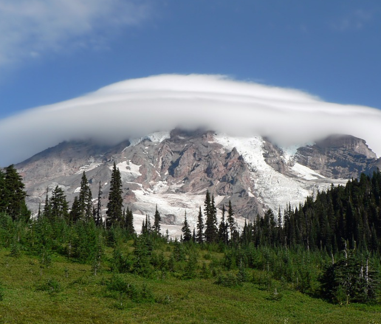

About Me
Hi, I’m Hackett!
I’m an avid hiker, camper, and outdoor enthusiast who thrives on exploring the beauty of the natural world. What started as casual weekend getaways to escape the hustle of daily life has grown into a deep passion for adventure, discovery, and connection with the outdoors.
Growing up, my family often took me on camping trips, where I learned to pitch tents, build campfires, and navigate trails. Those early experiences sparked a love for nature that has stayed with me ever since. Over the years, I’ve taken on more challenging hikes, learned the art of minimalist camping, and discovered the joy of simply being immersed in the wilderness.
Through Hackett's Outdoors, I hope to share the lessons I've learned and the stories I've collected along the way. Whether it’s recounting the time I braved an unexpected thunderstorm in the Rockies or sharing tips on how to pack smart for a week-long trek, this blog is a space for adventure seekers and nature lovers alike.
Safety Tips
Safety is the foundation of every successful outdoor adventure. Taking the time to prepare and remain vigilant ensures you can fully enjoy the beauty of nature while minimizing risks to yourself and others.
Safety Tip #1
Plan and Inform:
Always research your destination, check weather conditions, and let
someone know your itinerary before heading out. This ensures others can
assist if something goes wrong.
Safety Tip #2
Pack Essentials:
Carry enough water, food, and a first-aid kit, along with tools like a map,
compass, or GPS. Being prepared for unexpected situations can make all
the difference.
Safety Tip #3
Stay Aware:
Watch your surroundings for wildlife, unstable terrain, or changes in
weather. Staying alert helps you adapt quickly and avoid potential hazards.
My Adventures

Sunrise Summit at Mount Rainier
Climbing Mount Rainier in the pre-dawn hours was both challenging and exhilarating. As the first rays of sunlight crept over the horizon, the entire landscape transformed into a sea of golden light, leaving me awestruck. Standing at the summit, I felt humbled by nature's grandeur and inspired by the journey it took to get there.
Exploring the Appalachian Trail:
Hiking the Appalachian Trail was a true test of endurance and spirit, with every mile offering a new experience. From serene forest paths to rugged mountain ridges, the trail's diverse landscapes never ceased to amaze me. Along the way, I forged connections with fellow hikers, sharing stories and encouragement that made the journey unforgettable.
A Day Hike to Yosemite Falls:
The hike to Yosemite Falls was as demanding as it was rewarding, with steep switchbacks that tested my resolve. As I reached the top, the thunderous sound of the falls and the cool mist against my face made every step worthwhile. The view of water cascading into the valley below remains one of the most breathtaking sights I’ve ever witnessed.
Other locations that I have been to:
Banff National Park, Canada
○ Torres del Paine, Chile
○ Mount Kilimanjaro, Tanzania
○ The Dolomites, Italy
○ Zion National Park, USA
○ Lake District, England
○ Bergen, Norway
○ Patagonia, Argentina
○ New Zealand's South Island
○ The Swiss Alps, Switzerland
○ Machu Picchu, Peru
○ Grand Teton National Park, USA
○ Costa Brava, Spain
○ Rocky Mountains, Canada
○ Fiordland National Park, New Zealand
○ Great Barrier Reef, Australia
○ Kruger National Park, South Africa
Contact Me
I’d love to hear from you! Whether you have questions about a trail, want to share your own outdoor experiences, or just want to connect, feel free to reach out.
Email:hackett@hackettsoutdoors.com
Follow me on Instagram: @hackett_outdoors
Let’s keep the adventure going!